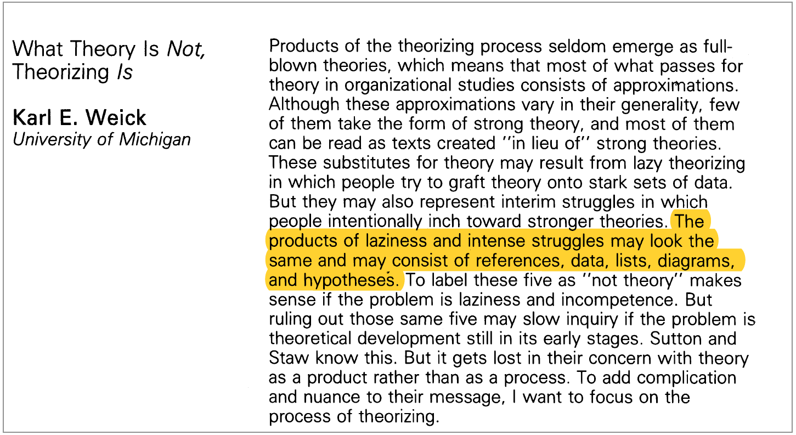

Venkatesh Rao
Consulting | Clients | Workshops/Speaking | Writing | Bio and CV | Contact
Hi, my name is Venkatesh Rao (Venkat). I am a Seattle-based writer and independent management consultant. I mainly write at Ribbonfarm and Breaking Smart. I am the author of a book on decision-making Tempo. Before I struck out on my own in 2011, I worked in the Xerox Innovation Group (now part of Xerox PARC) between 2006-11. Before that, I was a researcher at Cornell University. I hold a PhD in systems and control (U. Michigan, 2004).

Consulting
My consulting work primarily comprises 1:1 work with senior executives as a conversational sparring partner, to stress test and improve the rigor and quality of their ongoing thinking about their work. Karl Weick's short paper What Theory is Not, Theorizing Is is a good description of the natural process I try to build upon.
The working arrangement is usually just ongoing email/slack interactions, with 1:1 video-conference sparring sessions of 1-3 hours every 4-6 weeks (more or less often depending on the pace of developments). Occasionally a client will rope in a colleague or direct report to help drill down into a particular issue. There is usually no output product as such, beyond the summary email notes I send after every call.
Occasionally, I take on projects such as building system models, or preparing and delivering private workshops on specific topics at the request of clients.
My consulting models is best-suited for executives in medium-to-large organizations, and requires interactions over at least a year to yield results. Occasionally, I work with individuals, leaders at smaller companies and startups (typically past the product-market fit stage, with at least 25-30 employees and/or investment/revenue in the millions of dollars).
My current rate is $450/hour, and I typically only take on projects with at least 10-20 hours/year.
Clients usually find me directly through something I've written, rather than through a referral. Check out the writing section. The links below are to some of my more business-themed blog posts, but it is often a non-businsess post that triggers a great sparring relationship.
TopClients
This is an incomplete list of current and/or recent clients whom I've worked with for at least 6 months (I am not at liberty to list some clients, and I don't update this page often).- Jim Keller, VP Silicon Engineering, Intel
- John Bissell, CEO, Origin Materials
- Bryan Johnson, CEO, Kernel/OS Fund
- Dan Schmidt, VP Product, MDSave
- Brian Clare, CEO, One45
- Marc Andreessen, General Partner, a16z
Workshops and Speaking
I develop and deliver customized talks and interactive workshops on specific topics at the request of clients, either as part of ongoing consulting engagements, or as one-off things. Topics I have covered in recent years include software eating the world (now available as a recorded workshop), OODA-loop thinking, and energy transitions.
Selected public talks (video links if available):- Archetypes for the Anthropocene (Serpentine Work Marathon, September 2018)
- Off the Clock (Thinking Digital Conference, Newcastle, May 2018)
- Bloodcoin (Refactor Camp, Austin, May 2018)
I no longer accept speaking requests for short-format (<20 minutes) talks.
TopWriting
I mainly write on Ribbonfarm, a blog I started in 2007, and which now hosts a large number of writers exploring diverse themes. I also write the seasonal essay collections on technology at Breaking Smart and the associated weekly newsletter. You can find some of my older (pre-2012) writing in two ebooks, The Gervais Principle and Be Slightly Evil.
I have written one book, Tempo (2011), on decision-making. It is something like a pop-science version of my postdoctoral research at Cornell on command and control systems.
I've written a couple of pieces for Aeon Magazine and The Atlantic, among other outlets, and my writing has occasionally been mentioned in places like The Economist, BoingBoing, and The New York Times. Here is an interview with me on the Longform podcast, and one on Farnam Street Knowledge Project
I occasionally take on commissioned writing projects if there is a strong fit with things I want to write anyway.
TopBio
You can use the following generic bio for conference programs and such. Here is a hi-res headshot. Here is my CV (updated 2019).
{kind=link}
Venkatesh Rao is a Seattle-based writer and consultant. He is the founder of the Ribbonfarm blog and the Breaking Smart technology analysis site, and the author of Tempo, a book on decision-making. He holds a PhD in Aerospace Engineering (2003) from the University of Michigan. Between 2004 and 2006, he was a postdoctoral researcher at Cornell University, working on command and control systems. From 2006 to 2011 he was a senior researcher at the Xerox Research Center, Webster (now part of PARC). He has been an independent management consultant and writer since 2011.Top
Contact
Twitter @vgr or Facebook are best if you just want to chat casually or ask me quick questions. If you want to talk about a consulting project or participation at an event, get in touch at 
The phone is NOT a good way to reach me, but if you're in Seattle or visiting, I am usually available to meet in person.
Top